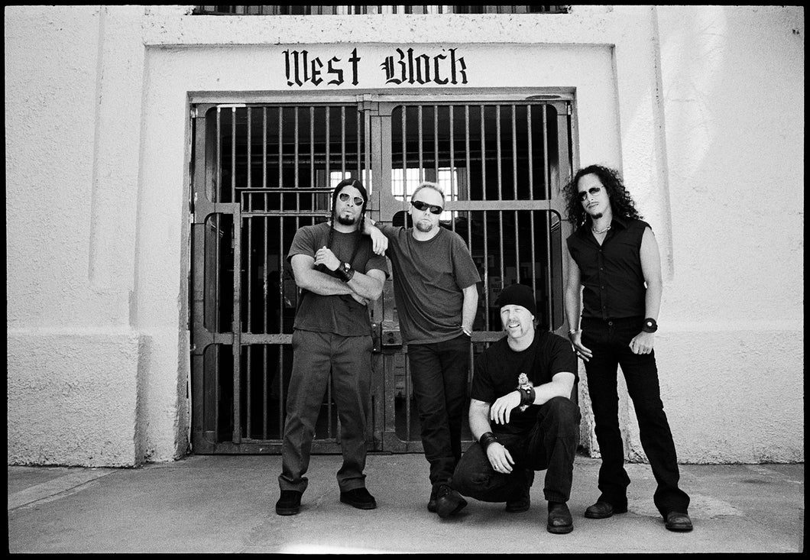

A St. Anger a Metallica 2003-as azonos című albumának címadó dala. A szám a zenekar történetének egyik legviharosabb időszakában született, amikor a tagok személyes és szakmai problémákkal küzdöttek.
A dal nyers hangzása, agresszív riffjei és érzelmekkel teli szövege jelentősen eltért a korábbi Metallica-albumok világától. A zenekar tudatosan egy kevésbé polírozott, közvetlenebb megszólalást választott, amely megosztotta a rajongókat és a kritikusokat.
A St. Anger ennek ellenére komoly szakmai elismerést kapott, és 2004-ben elnyerte a Best Metal Performance Grammy-díjat. Ez volt a Metallica ötödik Grammy-győzelme.
A dal a zenekar újjáépítésének szimbólumává vált. Az album készítésének folyamatát részletesen bemutatta a Some Kind of Monster című dokumentumfilm, amely betekintést adott a Metallica egyik legnehezebb korszakába.
Bár a St. Anger máig a Metallica egyik legvitatottabb kiadványa, Grammy-díja bizonyítja, hogy a zenekar a nehézségek közepette is képes volt maradandó és szakmailag elismert alkotást létrehozni.

